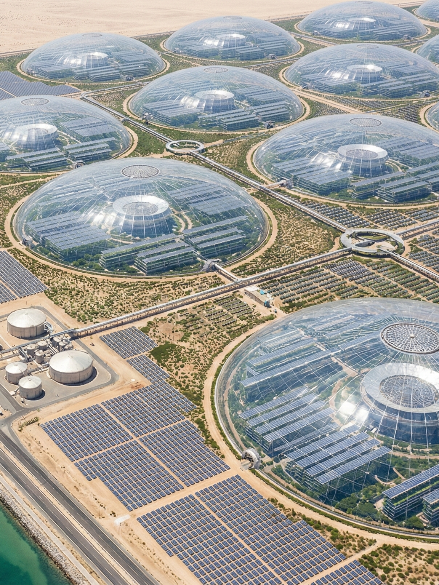
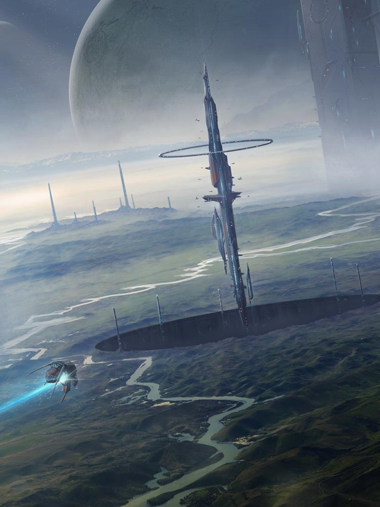
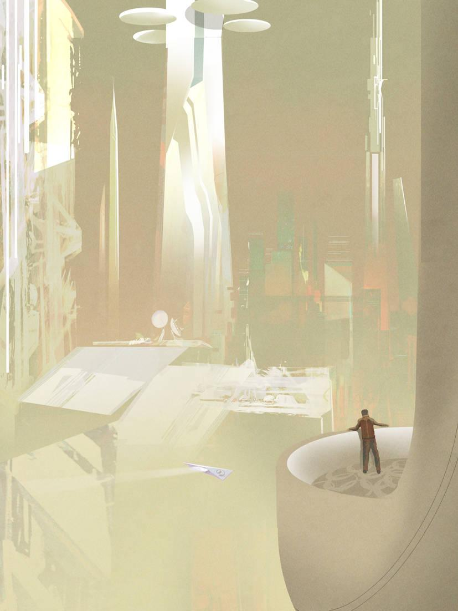
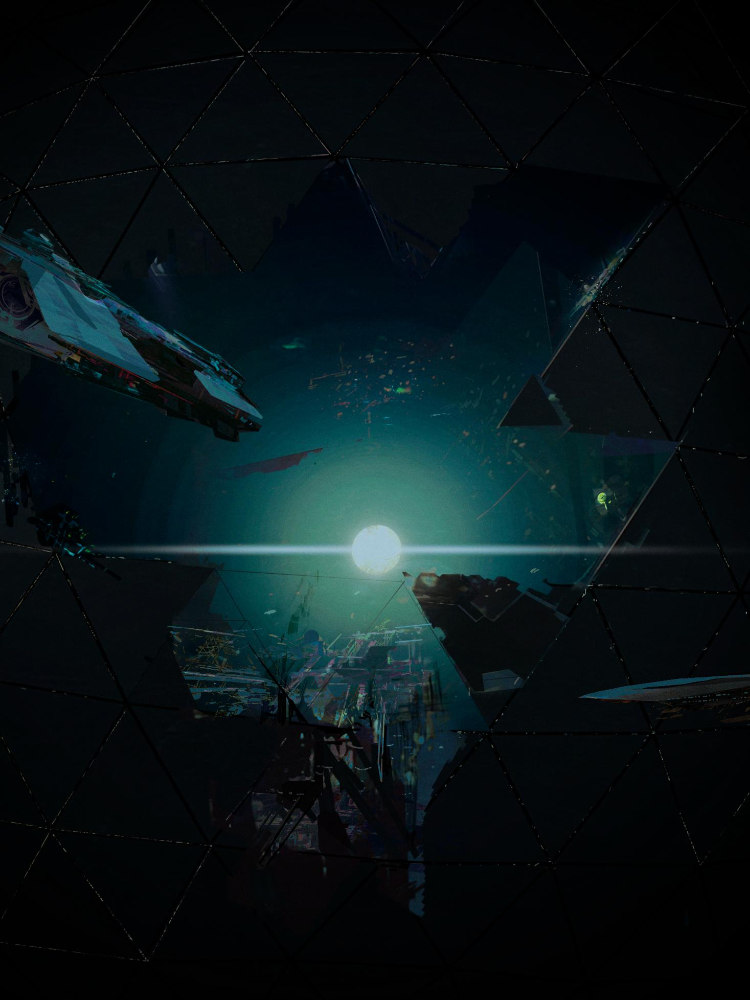
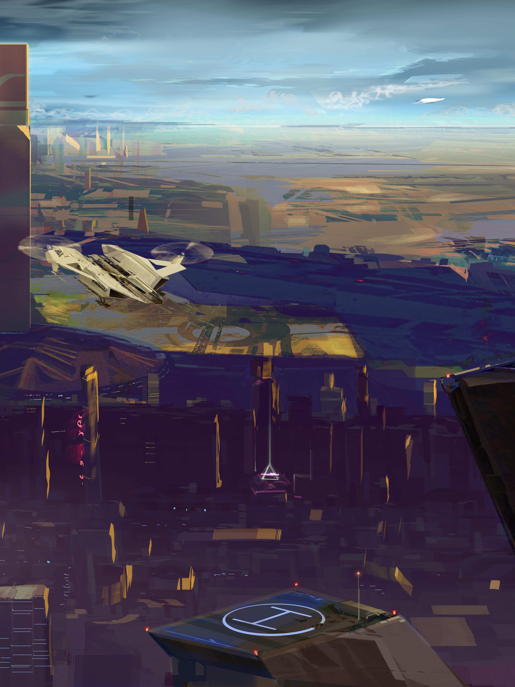
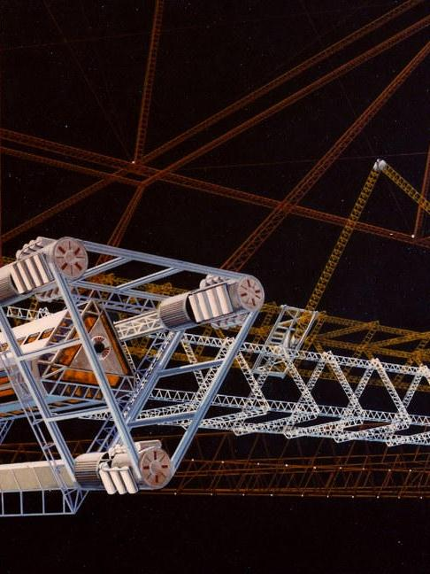

勇气、希望、理性
进步永无止境，我们亦是如此。探索繁荣紫藤的最新资讯和近期动态。

【由繁荣紫藤主导建设的“王之森行星太空港对接城生态穹顶一期工程”于本周期正式完成结构闭合与系统联调，标志着该行星基础生态支持体系进入稳定运行阶段。
本期工程涵盖：直径32公里复合型生态穹顶，与轨道农业环直连的物资输送枢纽，可容纳1200万标准人口的低维护居住模块，三层闭环水循环与气体调控系统.穹顶采用自修复复合材料与分区气候编译架构，可在高辐射与低温波动环境下维持稳定生态参数。所有核心设施已接入行星级产能调度网络，实现与太空港货运系统的无缝对接。
项目负责人表示：“王之森行星作为拥有超过100亿人口的超级行星兼繁荣紫藤重要盟友新巴黎共和国的首都，经济和政治意义毋庸置疑。根据规划，二期工程将扩展工业-农业混合区，并进一步提高行星运行效率。王之森行星预计将在未来十个标准年内完成更全面功能化阶段的转型。”
企业方面强调，本项目属于“百手巨人计划”的关键节点之一，其目标并非单纯扩展居住面积，而是建立可持续、可预测、可复制的行星级运行模型。】

【本周期，由星际食物联合体资源与边界评估探险队在亨廷斯星系一颗气态行星第三卫星执行常规矿产与水冰储量测绘任务时，发现疑似非人类起源的大型结构遗迹。该卫星原被归类为低重力、无大气、无生命迹象的资源型目标体。初步勘测显示，遗迹结构嵌入地表岩层，具规则几何排列特征，并包含未知合金残片与非自然能量衰减痕迹。
技术评估报告指出：结构规模约12公里，材料成分与现有已知合金体系不匹配，遗迹年代初步推算超过30万标准年。
项目负责人表示：“该发现不影响当前农业生产部署计划。但我们已暂停该卫星的资源开采活动。公司已启动三级审慎协议：1. 封锁区域并建立轨道监测。2. 调用独立材料分析舰。3. 启动文明风险评估模型。”
企业声明强调，现阶段无证据表明该遗迹存在活跃结构或运行系统，也未检测到信号发射行为。根据内部程序，此类发现将被纳入数据库，并接受跨部门风险分析，包括：潜在技术价值，不可预测文明接触概率，对区域战略资产安全的影响。公司未对遗迹性质作出公开推断。
目前，该卫星仍围绕其母气态行星稳定运行，它或许曾见证过一次文明的终结。现在，它被纳入产能规划之外。】



